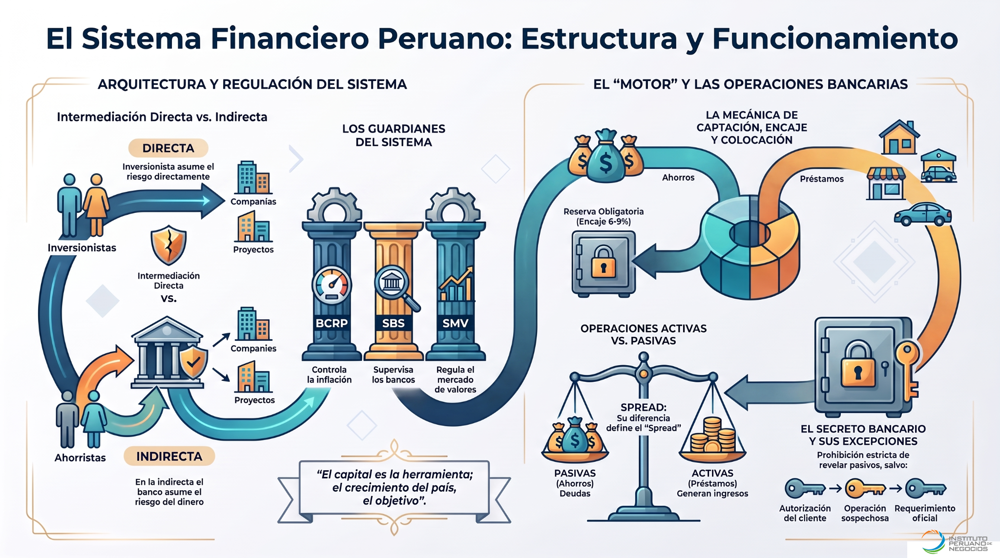

Introducción al Sistema Financiero Peruano
Cómo circula el dinero, quiénes participan y por qué la intermediación es clave
Recorre el sistema siguiendo el viaje del dinero: identifica quién dispone de recursos, quién los necesita, qué ruta los conecta y cómo funciona el motor bancario.
Quién ahorra y quién necesita recursos.
Intermediación directa e indirecta.
MEF, BCRP, SBS y SMV.
Captación, encaje y colocación.
Si depositas S/ 1,000 en una cuenta, ¿el banco simplemente guarda esos mismos billetes hasta que regreses por ellos, o esos recursos pasan a formar parte de un mecanismo más amplio de intermediación?
Cuatro tarjetas para construir el mapa
Pasa el mouse sobre una tarjeta para verla girar. Haz clic o tócala para abrir el contenido ampliado.
De los S/ 1,000 de Ana a una decisión de financiamiento
Cada paso incluye apoyo visual y, cuando aporta valor, un extracto de audio antes de la pregunta.
S/ 1,000
captación / reserva
crédito
ruta alternativa
Seis preguntas para verificar comprensión
Las preguntas y alternativas se presentan en orden aleatorio. Si fallas el primer intento, tendrás un segundo. Tras un segundo error se activa la Ruta correcta.
Abre cada material sin salir del programa
Todos los recursos se visualizan en una ventana interna y pueden ampliarse. Los materiales visuales incorporan Leer, Explicar, Pausar, Continuar y Detener.
Comprender el sistema antes de memorizarlo
La sesión deja una idea central: el sistema financiero no es una lista de bancos, siglas o productos. Es un circuito que conecta excedentes con necesidades de financiamiento, mediante rutas distintas y bajo funciones de regulación, supervisión y estabilidad.
Primero identifica quién dispone de recursos y quién los necesita. Esa relación explica la lógica del mercado financiero.
Si una entidad financiera capta y coloca recursos, hablamos de intermediación indirecta. Si inversionistas adquieren valores del emisor, la ruta es directa.
Captación, encaje o reserva y colocación forman una secuencia. El depósito representa una obligación para el banco; el préstamo, un derecho de cobro.
MEF, BCRP, SBS y SMV cumplen funciones distintas. Comprender el ámbito de cada uno evita memorizar siglas sin criterio.

Una decisión financiera se interpreta mejor cuando se sigue el recorrido del dinero. Antes de concluir, conviene separar actor, ruta, instrumento y función institucional. Esa lectura permite distinguir captación de colocación, operación pasiva de activa e intermediación indirecta de directa, y convierte conceptos aislados en un mapa coherente del Sistema Financiero Peruano.